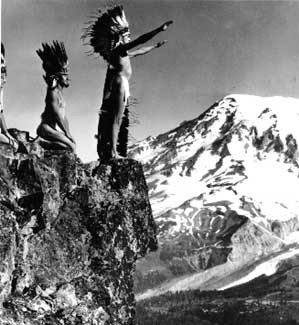
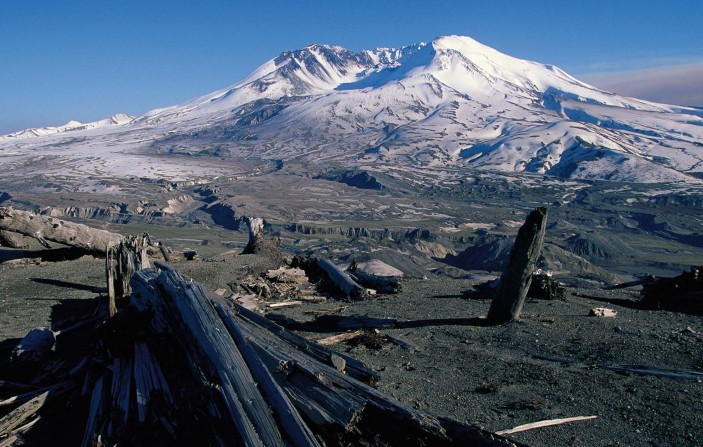
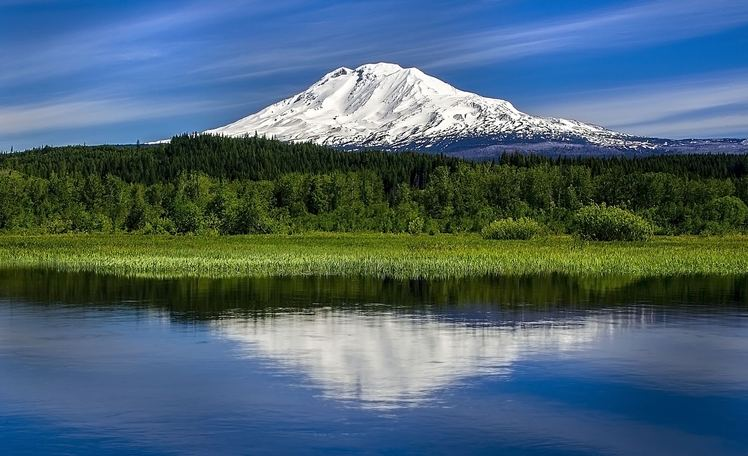
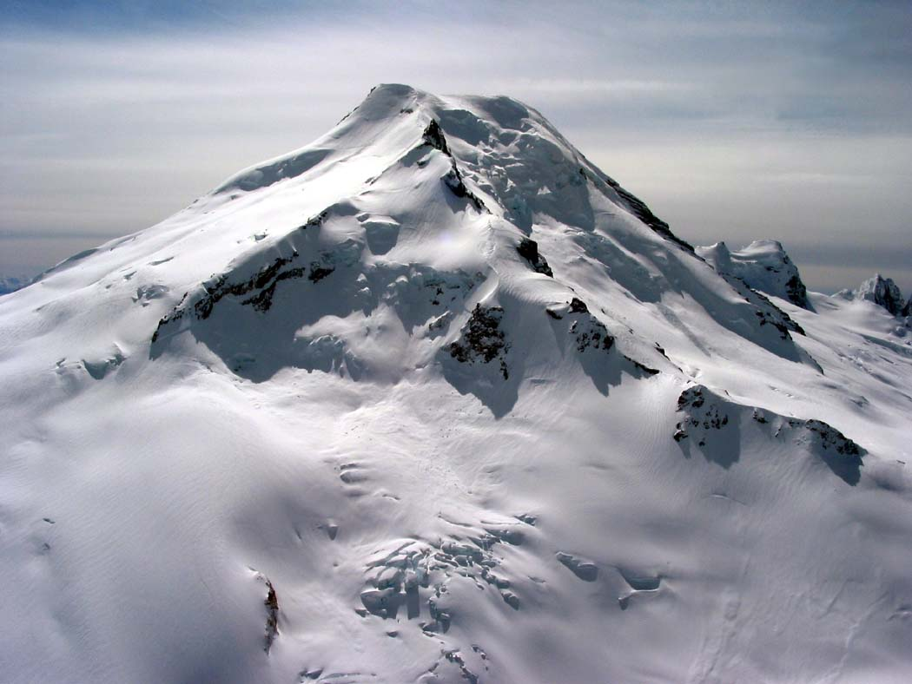

Begin here
Click on a mountain icon to reveal their tribal names. Viewers will embark the historical tribal stories for naming these mountains. As a Cowlitz Tribal Member I am passionate about the history of Native Americans and restoring our mountain tribal names. Let the stories be told and remembered.
Image Source: www.nps.gov
Mount Saint Helens
Native American names for Mount St. Helens were "Loowit" or "Louwala-Clough", which meant "smoking mountain". A Gifford Pinchot National Forest "Mount St. Helens" Brochure (1980) tells the story of how Mount St. Helens came to be: "... Northwest Indians told early explorers about the fiery Mount St. Helens. In fact, an Indian name for the mountain, Louwala-Clough, means "smoking mountain". According to one legend, the mountain was once a beautiful maiden, "Loowit". When two sons of the Great Spirit "Sahale" fell in love with her, she could not choose between them. The two braves, Wyeast and Klickitat fought over her, burying villages and forests in the process. Sahale was furious. He smote the three lovers and erected a mighty mountain peak where each fell. Because Loowit was beautiful, her mountain (Mount St. Helens) was a beautiful, symmetrical cone of dazzling white. Wyeast (Mount Hood) lifts his head in pride, but Klickitat (Mount Adams) wept to see the beautiful maiden wrapped in snow, so he bends his head as he gazes on St. Helens. ..."
View Full Story Here Image Credit: www.nature.com
Mount Rainier
The people of the Puyallup tribe have known the mountain as Tahoma or Tacoma since time immemorial. The word has multiple meanings, all with bioregional relevance. By definition, Tahoma can mean mother of waters or that frozen water both recognizing the glaciated peak as the significant source that it is. The word is also understood to mean large snowy mountain, a trait it certainly exemplifies. Another etymological explanation derives from definitions of the name’s component parts in the Lashootseed language; Ta (larger/taller) Koma-Kulshan (name for Mount Baker). Farther afield names such as Talol and Ti’Swaq are also applied to the mountain, reflecting the relativity with which native place names must be approached.
View Full Story Here
Image Credit: www.tehaleh.com
Mount Adams
Mount Adams (12,307 feet in altitude), the second highest peak in Washington, stands in the southwestern part of the state. The Klickitat and Yakama Indians called it Pahto. They claimed it as their mountain. This legend was told by Chief Jobe Charley, with his granddaughter, Hattie Wesley, acting as interpreter. Now eighty-six years old, Jobe Charley heard the story when he was a little boy. When he got his first horse, he rode to Mount Adams and climbed it. Until he saw the eagles up there, he had not believed the story. Many eagles are hatched in the caves in the east side of Mount Adams. Back when the mountains were people, Sun was a man. He had five mountains for his wives. One was Plash-Plash, where the Goat Rocks are now. Plash-Plash means “white spots.” Another was Wahkshum, west of Satus Pass. The others were Mount Adams, Mount Rainier, and Mount St. Helens. The Indians called all of them Pahto, which means “standing high.”
View Full Story Here Image Credit: www.mountain-forcast.com
Mount Baker
In the northwestern Cascades stands Mount Baker, the "Bride of the Pacific," always white robed. In the Lummi Indian tongue the mountain is called Kulshan — once an active volcano, it is now accounted extinct. It is not now known how long the mountain has borne this name nor exactly why it was given but it is very certain that Kulshan has been Kulshan for many generations. One of the most intelligent of the Lummi Indians attributes the name to the fact that the mountain was once conical and that the peak itself was destroyed by volcanic eruptions and explosions. The summit is not now conical but a cup-like crater. The name Kulshan is applied to other things than the mountain — any object that is long, slim or tall becomes Kulshan when shot at, struck and affected at the end. husband that she supplanted Duh-hwahk in the affections of Kulshan.
View Full Story Here Image Credit: www.citynews1130.com